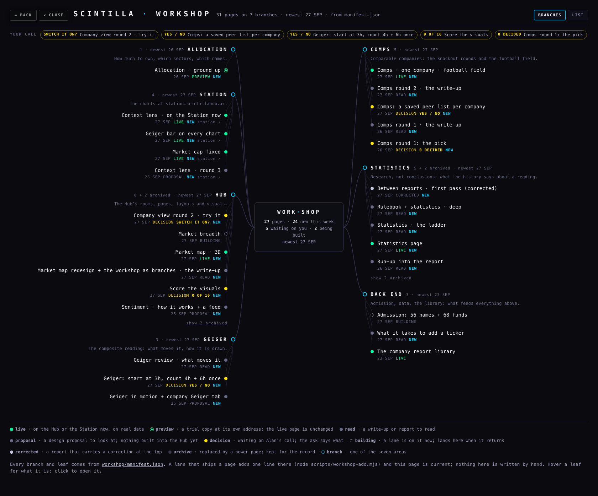
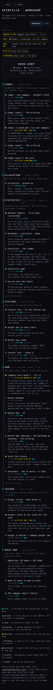

The market map redesigned as a wheel, and the workshop as branches that cannot go stale
Two things from Alan's Sunday notes. On the map: "make it into the design… really make something very strong. Please wow me." On the workshop: "a scatter of things without classifications, without order… goes stale easily", so organise it with branches like the Obsidian estate vault, and make it impossible to go stale by hand.
workshop/manifest.json; a lane adds one line to that file and the page is current. A plain list of the same data is one click away.
1 · The map
The full account of what the map shows, where every number comes from and what could be wrong is in MARKET-MAP.html, which was updated for this design. The short version:
- 544 balls: 486 lit with the live Geiger from the chart API (175 up, 311 down at 20:48 UTC, labelled VERIFIED by the API), 35 hollow cages "waiting for admission", 23 grey headings. Nothing is invented.
- The picture: THE MARKET, US STOCKS and US SECTORS on a short spine; SPY, QQQ, IWM and the style funds hugging it; the eleven sectors on a rim, each a ball of names with the biggest companies nearest the middle and its funds close to the heading; the world, bonds, commodities, crypto and the dollar on a higher ring above. Depth from fog, size and the tilt of the wheel.
- Colour: green above zero, red below, brighter the stronger, a halo past ±0.45. Each sector glows with the plain average of its lit lines and prints it under its heading ("99 lines · avg +0.27 · ▲69 ▼27 · 3 waiting"). That is labelled a summary, not a Geiger of the heading's own.
- Labels: page text, crisp at every zoom, tiered by how big the ball is on screen, and never overlapping. Zoom in and the names appear by size.
- Cheap: five draw calls for all the balls, one for the lines, one for the halos; draws only while something moves.
CPU, measured on this MacBook (headless, never the iMac)
| case | whole Chrome · CPU-s per min | the page's own thread | first build, same case |
|---|---|---|---|
| opening turn (first 20 s, the wheel turning by itself) · GPU | 17.1 | 4.9 | not measured |
| idle after it rests · GPU | 0.5 | 0.01 | 1.2 · 0.01 |
| 60 s of nonstop dragging · GPU | 17.7 | 6.0 | 23.3 · 14.0 |
| 60 s of nonstop dragging · software graphics | 700 | 0.8 | 638 · 3.3 |
60 would be one core fully busy. Idle is zero. Dragging costs about a third of a core on a real GPU, with the page's own share less than half the first build's. The headless GPU run drew 82 frames a second; a real screen stops at 60, so it is lower on a screen. The software row only says that painting pixels on the CPU is expensive; no real screen does that. The old iMac itself was not measured, by the rule that nobody touches it, so "cheap on an old iMac" is expected from these figures, not proven.
What the screenshots show


All shots are from a headless browser with no window on Alan's screen. The chart API only answers the scintillahub.ai address, so the throwaway headless browser ran with its cross-origin check relaxed; the page is unchanged. Every browser started was killed before returning.
2 · The workshop as branches
Open /workshop/. It is a mind map: WORK·SHOP in the middle, seven branches (Comps, Allocation, Statistics, Station, Hub, Geiger, Back end) split across the two sides so they balance, and each page a leaf on its branch with a dot for its status, its date, its state in a word, and the question if it is waiting on you. Hover a leaf for what it is; click to open it. A row of chips at the top lists everything waiting on your call; the centre card counts pages, new this week, waiting on you and being built. Archived leaves are folded under "show N archived". On a phone it becomes one column with the same wires. LIST at the top right shows the same data as a plain list, and with scripts off the page points at the manifest file itself.


Why it cannot go stale by hand
The page has no cards written into it. It reads workshop/manifest.json when it opens and draws everything from that: the branches, the leaves, the counts, the YOUR CALL row, the legend. "NEW" is anything dated within the last two days, so it fades on its own. A test fails if a hand-written card ever comes back, if a leaf points at a page that is not in the repo, if a date is not a date, or if a decision has no question.
The manifest format: how every lane adds itself
One command, from the Hub repo, when a lane ships a page:
node scripts/workshop-add.mjs --id ladder-20260927 --area statistics \ --title "Statistics · the ladder" --status read --date 2026-09-27 \ --href /deliverables/20260927/ladder/LADDER.html \ --blurb "If you bought at RSI level 5, 10 … 70, how did it go." \ [--ask "YES / NO"] [--lane S8] [--supersedes entry-confluence]
It validates, appends (or updates the leaf with that id), archives the leaf it supersedes, sorts by date and writes the file. --check validates without writing. The same checks run in tests/workshop-manifest.test.mjs. A leaf, by hand if you prefer, is one JSON object in the items list:
{ "id": "ladder-20260927", kebab-case, unique
"area": "statistics", one of: comps · allocation · statistics · station · hub · geiger · backend
"title": "Statistics · the ladder", what the leaf says
"blurb": "If you bought at …", one or two plain sentences, shown on hover
"href": "/deliverables/…/LADDER.html", a site path that exists in the repo, or a full https:// address
(Station and preview pages); may be left out only while status is "building"
"status": "read", one of the statuses below
"date": "2026-09-27", the day it landed or last changed; drives NEW and the order
"ask": "YES / NO", required when status is "decision": the question on the chip
"lane": "S8", optional: who built it
"supersedes": "entry-confluence" } optional: the leaf this replaces; it is archived automatically
| status | meaning | drawn as |
|---|---|---|
| live | on the Hub or the Station now, on real data | green dot, LIVE |
| preview | a trial copy at its own address; the live page is unchanged | green ring |
| read | a write-up or report to read | grey dot |
| proposal | a design proposal to look at; nothing built into the Hub yet | grey dot |
| decision | waiting on Alan's call; the ask says what | yellow dot, on the YOUR CALL row |
| building | a lane is on it now; lands here when it returns | dashed ring |
| corrected | a report that carries a correction at the top | light dot |
| archive | replaced by a newer page; kept for the record | dimmed, folded |
Branches are fixed at the seven Alan named. A new branch is a new object in areas (id, label, blurb) and needs the test's list updated, on purpose, so branches do not multiply by accident.
Seeded today with every card that was on the workshop page this afternoon (31 leaves), including this write-up and the map. The statuses and dates are as the page had them; a decision leaf is removed from the row by changing its status when Alan decides.
What could be wrong
- The workshop keeps the Hub's dark look with cyan chrome and green / yellow status dots, as the 27 Sep afternoon page did. The 23 Sep house rule for sub-pages is greys only; if the coordinator wants the workshop grey too, it is a token change at the top of the file.
- Each sector's glow and "avg" is an unweighted average of its lit lines. Ten small caps can outweigh NVDA in it.
- Label collision is solved greedily each frame: the winner is the more important label, so a small company's name can flicker in and out as you turn.
- The manifest dates for the seeded leaves are the dates the old page printed, not the commit times.
- Screenshots of the wheel were taken in software graphics (no GPU headless); on a real screen the halos are the same shape and a little smoother.
What I did not do
- No push, no deploy, no database write, no paid model call, no touch of the iMac.
- Did not add the map to the prototypes library index (it is on the workshop).
- Did not add the other lanes' pages beyond what the workshop page already carried; each lane adds itself from now on.
- Did not cap the frame rate while dragging; a 30-frames-a-second cap would halve the dragging cost on an old machine at some smoothness. See decision 2.
- Did not build the "scintillate" flash; the hook stays defined and unwired, as before.
Files
deliverables/20260927/market-map/index.html: the map, rewritten (three.js directly, no simulation).deliverables/20260927/market-map/proof.mjs: headless screenshots and the three CPU cases.deliverables/20260927/market-map/MARKET-MAP.html: the map's plain-words account, updated.workshop/index.html: the branch map; no cards in it.workshop/manifest.json: the one list.scripts/workshop-add.mjs: add or check a leaf.tests/workshop-manifest.test.mjs: six checks on the manifest, the page and the script.